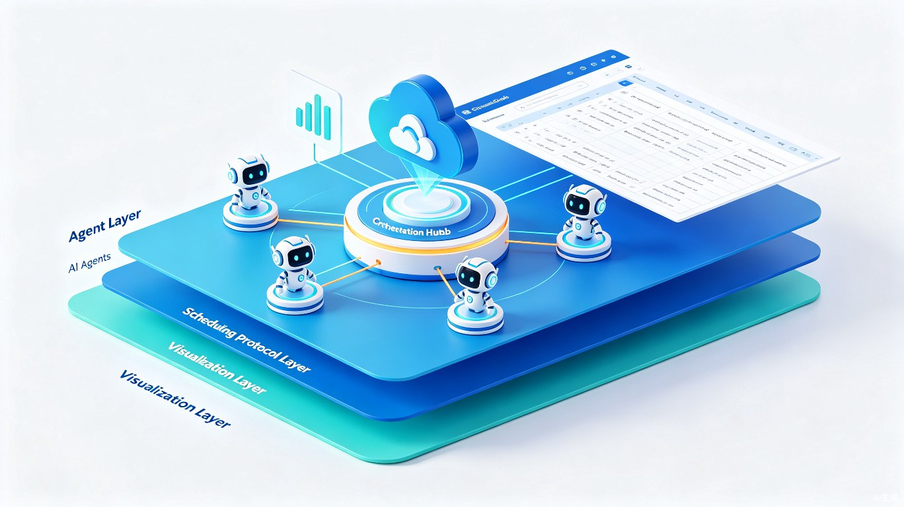

TRAE 大赛 · 创意提案
Ruflo-Swarm
基于 OpenClaw 的分布式多智能体集群调度飞书可视化协同平台 —— 多终端、多设备跨端协同，让业余独立开发者也能拥有统一、可观测、可追溯的 AI 集群调度能力
基于 OpenClaw 的分布式多智能体集群调度飞书可视化协同平台 —— 多终端、多设备跨端协同，让业余独立开发者也能拥有统一、可观测、可追溯的 AI 集群调度能力
从高速服务区到数字宇宙 —— 一个长途货车司机的开源梦想
白天驾驶挂车穿越千里公路，夜晚在服务区打开笔记本与豆包反复讨论架构、打磨方案。多终端、多设备跨端 AI 协同是独立自学开发者的基础刚需 —— 日常联动云端智能体未央、本地离线智能体通明完成多端协同调试，依靠碎片化时间钻研多智能体技术。开发过程中广泛参考全网技术博主、AI 领域 KOL 在各大技术社区公开分享的多智能体 Skill 开源项目与 Swarm 集群调度实战教程，吸收社区成熟落地思路，结合自身多设备混合运行的真实痛点，逐步叠加多模型兼容、第三方 AI 应用快速集成、飞书开放平台联动能力。
常年长途跑车、依靠碎片化时间自学开发 —— 多终端多设备混合运行下的真实痛点
以飞书多维表格作为唯一观测面板，零前端开发，零外部耦合
Ruflo-Swarm 不开发任何 iframe 嵌入页面，不耦合外部业务系统，仅使用飞书原生多维表格（Bitable）作为集群的唯一观测看板。通过 Ruflo 调度协议标准化 Agent 间通信，借助飞书 OpenAPI 将所有运行时数据实时同步到多维表格 —— 任务流转有台账、Agent 状态有面板、对话记忆有归档。无论你在车载终端、服务区笔记本还是手机上打开飞书，一切尽在掌握。整套方案零前端开发、低成本可用，完美适配依靠碎片化时间维护集群的业余自学开发者。
flowchart LR
subgraph AgentLayer["智能体层"]
A1[Agent-Alpha
任务执行]
A2[Agent-Beta
数据处理]
A3[Agent-Gamma
对话管理]
end
subgraph ScheduleLayer["调度层"]
R[Ruflo 协议
标准化通信]
end
subgraph VisualLayer["观测层"]
B[飞书 Bitable
多维表格看板]
B1[任务台账表]
B2[Agent状态表]
B3[记忆归档表]
end
A1 --> R --> B
A2 --> R --> B
A3 --> R --> B
R -->|OpenAPI| B1
R -->|OpenAPI| B2
R -->|OpenAPI| B3
四大功能模块覆盖多智能体集群全生命周期管理
基于 Ruflo 调度协议，支持多个 OpenClaw Agent 间的标准化任务分发与状态同步。每个 Agent 承担独立职责，通过协议层协调工作，形成有机的分布式计算集群。
Ruflo Protocol · OpenClaw Plugin每个任务从创建、分配、执行到完成，全流程记录到飞书多维表格台账。支持任务来源追溯、处理链路可视化、耗时统计与结果归档，让复杂的任务流转透明可控。
Bitable OpenAPI · Task LedgerAgent AAMP（自动对齐与消息协议）状态与通信心跳实时写入飞书表格。当 Agent 卡死或通信中断时，在表格中直观呈现异常标记与时间线，极大降低排查门槛。
Health Monitor · Anomaly Detection定时将各 Agent 当日对话记录通过 OpenAPI 写入飞书多维表格归档表，形成结构化的记忆数据库。既防止本地文件丢失，又为后续的 Agent 能力评估与上下文复用提供数据基础。
Memory Archive · Cron Sync轻量协议层 + 飞书原生能力，拒绝过度工程化

TRAE 全家桶 + 豆包 AI + 未央/通明多端协同，构建完整创作闭环
使用 TRAE IDE 编写和调试 feishu_bitable.py 数据同步脚本，完成与飞书 Bitable OpenAPI 的对接联调、异常处理与日志输出优化。
使用 TRAE Work 整理全套参赛提案文档，从项目描述、架构图到功能说明，所有文字与排版均依托 TRAE Work 完成。
项目整体方案从需求构思、技术选型、架构梳理到文档落地，全程与豆包反复沟通打磨。每一个技术决策都经过与豆包的多轮讨论。
长期联动的云端智能体，负责在线环境下的代码验证、API 联调与远程协作调试，是跨端协同体系中的云端核心节点。
本地离线智能体，在无网络环境下完成脚本编写、逻辑验证与离线测试，确保即使在长途驾驶途中也能持续推进开发。
在跑长途的间隙打开豆包，讲述自己在多 Agent 开发中遇到的实际困难，与豆包一起梳理核心痛点与解决方向。
与豆包反复讨论技术栈选择，确定以飞书 Bitable 为唯一观测面板的轻量方案，设计 Ruflo 调度协议的通信规范。
使用 TRAE IDE 编写 feishu_bitable.py 同步脚本，在豆包的指导下处理 API 认证、数据映射、异常重试等技术细节。
使用 TRAE Work 生成并排版本提案页面，将散落在对话中的思路凝聚为结构化的参赛文档。
四项核心演示内容，全方位展示平台能力
现场演示 2-3 个 OpenClaw Agent 通过 Ruflo 协议进行协同任务处理，展示任务分发、状态同步、结果汇聚的完整链路。
Agent 运行过程中，实时观察飞书多维表格中任务台账、Agent 状态表的数据变化，验证 OpenAPI 同步的实时性与准确性。
模拟 Agent 通信中断场景，展示系统如何在飞书表格中自动标记异常状态、记录故障时间线，实现可视化故障排查。
演示 Cron 定时任务自动将当日 Agent 对话记录归档到飞书多维表格归档表中，展示结构化记忆数据库的生成过程。
站在巨人的肩膀上 —— 吸收社区智慧，结合自身痛点落地创新
本项目开发过程中广泛参考全网技术博主、AI 领域 KOL 在各大技术社区公开分享的多智能体 Skill 开源项目与Swarm 集群调度实战教程，吸收社区成熟落地思路。但 Ruflo-Swarm 并非简单的教程复现 —— 它是将社区智慧与一个长途货车司机的真实多设备混合运行痛点深度结合的产物。从参考到落地，每一步都经过豆包的反复讨论验证，确保方案既接地气、又能真正解决独立开发者的刚需。
从初赛到未来的演进计划
完成 Ruflo 协议 v0.1 设计、feishu_bitable.py 核心同步脚本、飞书多维表格看板模板搭建，实现多 Agent 协同模拟与基础任务追踪。
引入 MiniMax/MiMO 多模型集成，完善 AAMP 异常检测机制，实现对话记忆归档的自动化流水线，增加 Agent 动态注册/注销能力。
完善 OpenClaw 插件生态对接，发布 Ruflo 协议规范文档，支持第三方 Agent 按协议接入集群，构建可扩展的多智能体调度生态。
多终端跨端协同 —— 一个货车司机的分布式 AI 集群调度梦想
回到顶部